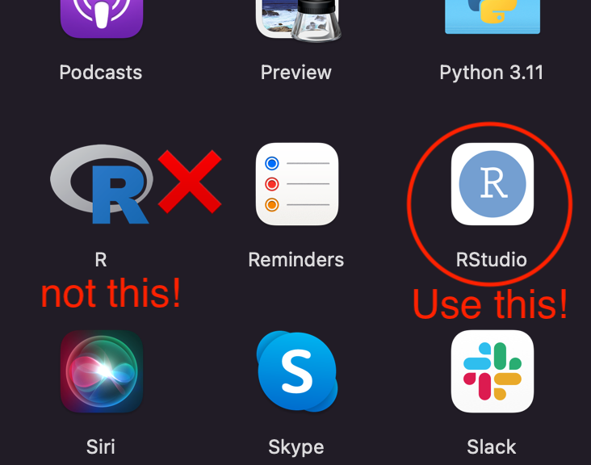
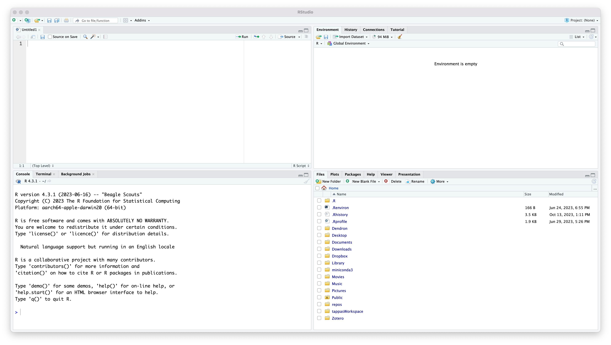
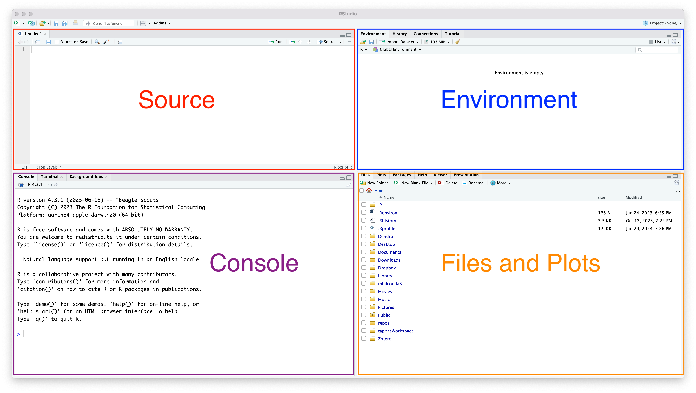
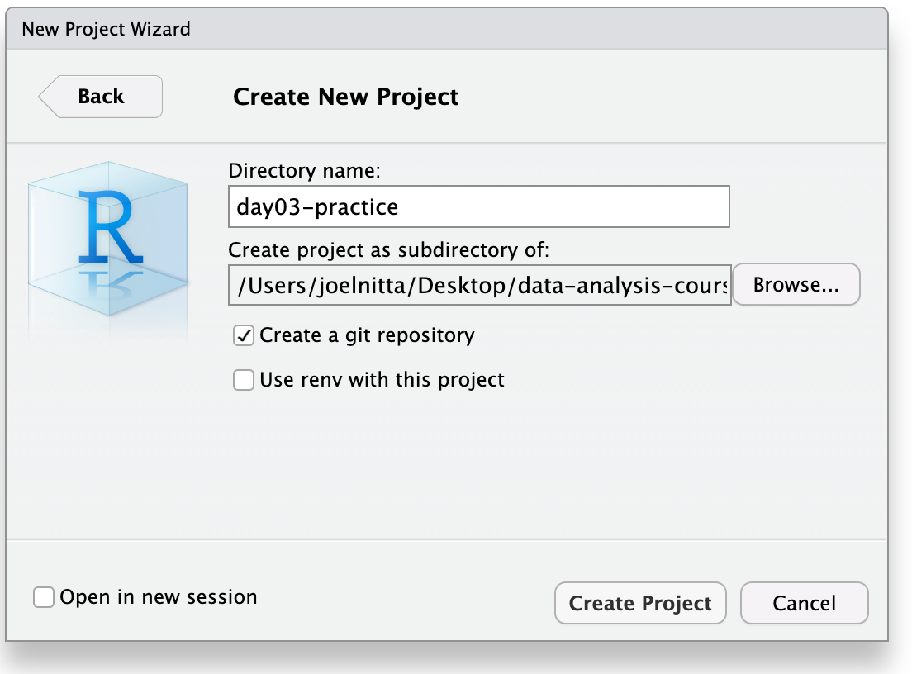
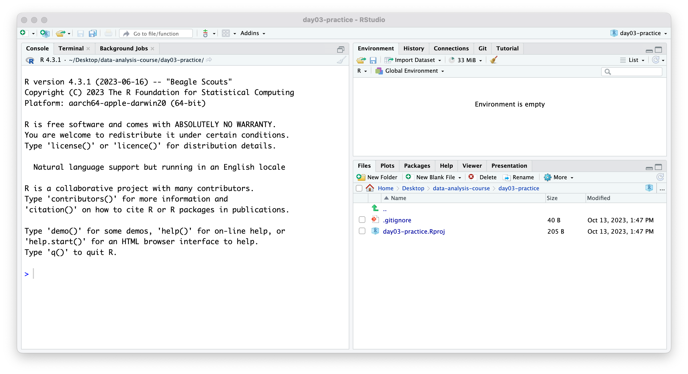
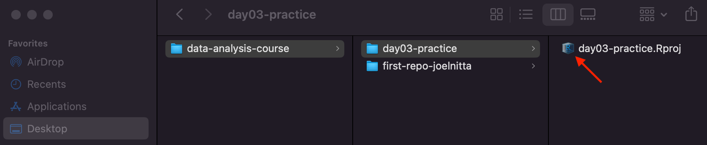
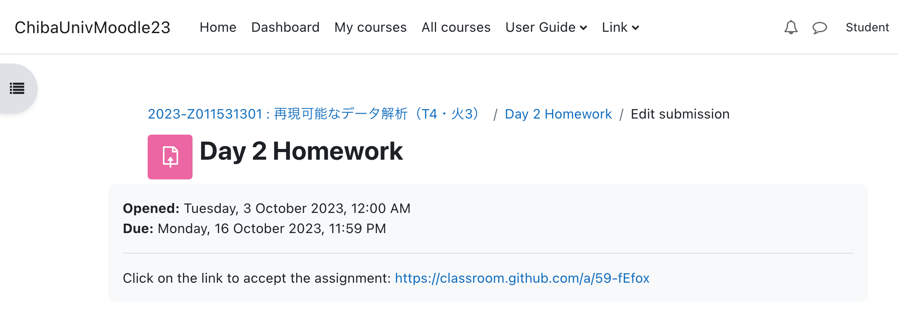

2 + 2[1] 4R is the programming language
RStudio is software to use R and write R code
We will always use R through RStudio! (don’t click on the icon for R)

We will start by navigating RStudio
There are four main panels


So far, we have only cloned projects from GitHub
Today you will create a new project on your computer
In RStudio, click File ➡︎ New Project ➡︎ New Directory ➡︎ New Project (again)
Let’s put call this project day03-practice and put it in the data-analysis-course folder on the Desktop
Click “Create a git repository”, since we are using git

RStudio will restart, and you will see in the File pane that we are located in the new project
RStudio has created two files automatically, day03-practice.Rproj and .gitignore
Now we are ready to start using R!

You can execute R code to calculate numbers directly in the console by typing the calculation then pressing “Enter”
Try something like this:
2 + 2[1] 45 * 10[1] 502 / 3[1] 0.6666667(2 + 1)^2[1] 9Congratulations! You are now an R programmer!
R can do much more than act like a calculator
One very useful thing is the ability to store values in variables, often called “objects” in R
We assign values to objects using the arrow symbol: <-
x <- 2 + 2. . .
However, R does not show you the value of x when you assign it
To check the value of x, type x in the console and press “Enter”
x[1] 4The value of x is also shown in the Environment panel (top-right panel)
Now that we have saved a value to x, we can do additional calculations with it:
x * 10[1] 40We can then use that code to build a new object:
y <- x * 10
y[1] 40But notice that the objects don’t “react” to each other (in other words, assigning a value to one object does not change the values of other objects):
x <- 5
# What is value of x?
x[1] 5. . .
# What is the value of y?
# (remember, y <- x * 10). . .
y[1] 40Before continuing, we need to change some of the default settings in R
I’ll also demonstrate how to use the .Rproj file to open a project
Quit RStudio (we will open it again soon) by clicking File ➡︎ Quit Session
data-analysis-course/day03-practice on your Desktop and clicking on day03-practice.Rproj.

x and y are still there, even though the code that we typed last time is gone!
x and yTools ➡︎ Global Options
.RData file, which is where those data were stored
. . .
Click File ➡︎ New File ➡︎ R Script
Click the disk icon or File ➡︎ Save As... to give your file a name (let’s say, “practice.R”) and save it.
x <- 2 + 2 and hit the “Enter” keyNotice that R does not run the code, since this is the file editing pane, not the R console
We need to send the code to the console (that is, send it to R)
One way to do this is to copy-and-paste it. But that is annoying.
The better way is to use the keyboard shortcut: control (Window) or command (Mac) + the enter key. Try it!
You can also either press the “Run” button in RStudio to run one line at a time, or the “Source” button to run all of the contents of your script
# This is a comment.
# Let's use R like a calculator:
22 / 7[1] 3.142857The next step in our R journey is to learn about functions
A function takes input, does something to it, and returns output
For example, let’s try using the round function, which rounds numbers
function_name(input)round:round(3.142857)[1] 3. . .
digits argument to round to 3 digits.round(3.142857, digits = 3)[1] 3.143round(3.142857, 3)[1] 3.143This is all fine if you already know everything about what the function does, but nobody knows everything about R!
To see the settings (arguments) of a function, type a question mark followed by the name of the function, like this: ?round
A description will appear in the help panel on the lower right.
Googling or asking ChatGPT* are also OK
*but always be sure to check what ChatGPT tells you!
So far, we have been doing calculations on one value at a time. But we want to be able to calculate many things at once.
We can do that with vectors, which are a series of values
You make a vector with the c() function
# Create a vector of numbers
# (a "numeric vector")
numbers <- c(1, 2, 3, 4, 5)
numbers[1] 1 2 3 4 5We can now do use the vector as input. Say we want to double each of the numbers:
numbers * 2[1] 2 4 6 8 10…or obtain their mean value:
mean(numbers)[1] 3Vectors have a rule: each item (called an “element”) of the vector must be of the same data type
The basic data types in R include:
"double")TRUE or FALSE)# A numeric vector:
c(1, 2, 3)[1] 1 2 3# A character vector:
c("banana", "orange", "apple")[1] "banana" "orange" "apple" # A logical vector:
c(TRUE, FALSE, TRUE)[1] TRUE FALSE TRUEWe can check the type of the vector using the typeof() function.
nums <- c(1, 2, 3)
typeof(nums)[1] "double"fruit <- c("banana", "orange", "apple")
typeof(fruit)[1] "character"tf <- c(TRUE, FALSE, TRUE)
typeof(tf)[1] "logical"What do you think happens if you try to combine data of different types?
Try it!
mixed <- c(1, 2, "banana", "orange")mixed <- c(1, 2, "banana", "orange")
mixed[1] "1" "2" "banana" "orange"typeof(mixed)[1] "character". . .
numeric data and the character data were all forced to be character (even though "1" may look like a number, the quotation marks show you that it is stored as a character)We will finish by demonstrating a very useful thing in programming: comparing values
The comparison symbols are:
> greater than< less than== equals (be careful! use two equals signs, not one)!= not equal# Here are some ages of people
ages <- c(21, 8, 40)
# Which of these people are adults?
ages > 20[1] TRUE FALSE TRUEThe reason that comparisons are so useful is that you can use them for subsetting, that is, to narrow down the data
You perform subsetting with square brackets, []
ages[2][1] 8ages[c(1, 2)][1] 21 8ages[c(TRUE, TRUE, FALSE)][1] 21 8However, you typically don’t type such logical vectors by hand
It is more useful to subset by using the output of a comparison
For example, let’s subset to only ages of adults. Recall how we set up that comparison:
ages > 20[1] TRUE FALSE TRUEages[ages > 20][1] 21 40. . .
Go to Moodle, click on Day 3 Homework and click on the link to accept the assignment
Clone the repo to your data-analysis-course on your Desktop, like we did last time
Edit the day03_homework.R file to answer the questions.
Make sure to run the code. Your R code should not have any errors!
Commit your changes as you work on your homework, and push them to the remote
Submit the URL for the remote as your answer on Moodle

I provide homework to give you a chance to think and learn
For basic R homework, ChatGPT can answer all of the questions instantly, and I can’t tell if you used it or not
But if you only use ChatGPT, you will not learn anything
Please think about why you are taking this class (and why you are paying money to attend Chiba U): do you just want a grade, or do you want to learn? It is up to you.
Comments
In addition to the actual code, it is very useful to include notes in your script so you can remember why you did things
These notes are called “comments”
You write a comment by starting with
#. Anything after that will be ignored by R